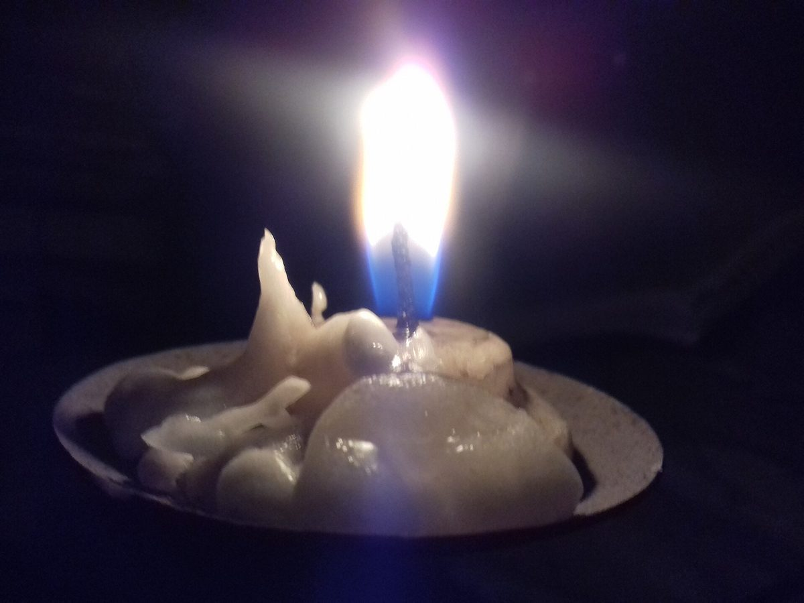

カフェ / 福岡県田川郡福智町
想い堂おもいどう
カフェ「想い堂」のご案内ページです。営業時間やメニューなど、詳しいことは準備中。まずはInstagramをのぞいてみてください。

制作側の連想
「想い」と「堂」から、球体の置き物を思い浮かべました
店名の由来は分かりません。制作側は「想い」という字から、ひとつの球の中にそっと閉じ込めておきたい一場面を連想しました。そこでこのページは、ガラス球に台座を付けた飾り物のように、写真を丸く切り抜いて並べる作りにしています。制作側の連想で、お店の理念・由来とは無関係です。
ふる・まう・おちつく
3つの球で、ひと巡り
写真は時の流れのイメージで選んだ、国外・撮影地不明のフリー素材です。お店の内装や商品ではありません。
- 1ふる
国外または撮影地不明のフリー素材(お店の写真ではありません) - 2
 まう
まう国外または撮影地不明のフリー素材(お店の写真ではありません) - 3

おちつく国外または撮影地不明のフリー素材(お店の写真ではありません)
ご案内
お店のこと(確認できたものだけ)
| 所在地 | 〒822-1212 福岡県田川郡福智町弁城3391 |
|---|---|
| 電話 | なし |
| 営業時間 | 準備中 |
| 定休日 | 準備中 |
| ご予約 | 準備中 |
| 駐車場 | 準備中 |
| SNS | Instagram @omoidou_6228 |